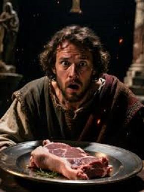

Fíjense lo que son las cosas: al principio, según la Biblia, «hizo Dios» a todos los «animales de la tierra según su género», y «vio Dios que era bueno» (Génesis 1:25). Hasta allí todo perfecto. Después «creó Dios al hombre a su imagen», sí, «a imagen de Dios lo creó» (Génesis 1:27), pero a pesar de ser un dios omnisciente y perfecto, tiempo después, se arrepintió de haber hecho al hombre, al ver que era una especie con mucha maldad, aunque lo hizo a su propia imagen (Génesis 6:6-7). ¿Cuál fue su solución? ¿Corregir su obra defectuosa? No, exterminarla, bueno, casi por completo, produciendo un Diluvio Universal.


Sin embargo, nunca se arrepintió «Dios» de haber creado a los animales, aunque también decidió exterminarlos casi por completo. Y aquella fue su gran oportunidad para que después sólo existieran animales «benignos», que no hicieran ningún daño a nadie, y de cuya carne se pudiera comer libremente. Pero no, dejó vivos, entre otros, a los cerdos, de los cuales prohibió estrictamente su consumo. ¿Pero cuál fue el poderoso motivo para ello? Pues, que se trataba y se trata de un animal que tiene «pezuñas hendidas, pero no rumia». Sí, y sólo por eso hay que considerarlo un animal «inmundo», de cuya carne nadie debe comer (Levítico 11:7-8). ¿Qué les parece? ¿Sólo por la forma de sus patas y la forma en que come? ¿No habría sido mejor que «Dios», como gran diseñador, si no le gustaban esos detallitos, hubiera creado a estos animales con otras características?
Y por eso desde entonces las religiones abrahámicas —judaísmo, cristianismo, y especialmente el islam—satanizaran al cerdo, y claro, el desprecio con que los judíos ven a este animal es evidente en la Biblia. De hecho, también Jesús como judío los despreciaba. Aconsejaba, por ejemplo, no dar nada valioso a los cerdos (Mateo 7:6), y cuando ciertos «espíritus inmundos» se apoderaron de un hombre (o dos), ordenó a esos espíritus que mejor penetraran en unos cerdos que por ahí estaban, haciéndolos después caer en un precipicio para perecer ahogados (Marcos 5:1-13, Mateo 8:28-32, Lucas 8:26-33).
Sí, el hecho de ser un animal de «pezuñas hendidas, pero no rumia», bastó para que los seguidores del dios abrahámico rechazaran totalmente la carne de cerdo, calificándola como «alimento inmundo». En términos simples, inmundo significa sucio, asqueroso, repugnante. Pero, ¿hay razones sanitarias para pensar que tienen razón, o sólo se trata de una superstición religiosa heredada de tiempos primitivos? Además, si la salud y el bienestar humano eran realmente una preocupación divina, ¿por qué se olvidó «Dios» de prohibir cosas realmente malas, como la esclavitud, la violencia doméstica o la pederastia, mientras se obsesionaba con hendiduras en las pezuñas de ciertos animales y la forma en que comían?
Sucede que desde el punto de vista médico-nutricionista actual, la carne de cerdo NO es intrínsecamente mala. Como cualquier alimento, sus beneficios o riesgos dependen de cómo se consume y en qué contexto dietético. La carne de cerdo es una fuente de proteínas de alto valor biológico, que contiene hierro hemo (de fácil absorción), zinc, fósforo y vitaminas del complejo B, especialmente B1 (tiamina), y sus grasas son mixtas (cerca de un 40–45% son saturadas y pueden elevar el colesterol LD, pero alrededor de 45% pueden ser beneficiosas para la salud cardiovascular, similares a las presentes en el aceite de oliva). O sea, el problema no es la carne de cerdo como tal, sino:
El consumo excesivo de grasa saturada (como en el chicharrón o lomo muy grasoso).
El consumo excesivo de carnes procesadas: tocino, jamón, salchichas, mortadela, pepperoni, etc.
El consumo excesivo de carnes rojas (incluyendo la de cerdo).
La Organización Mundial de la Salud (OMS) clasificó en 2015 a la carne procesada de cualquier tipo como cancerígena para humanos (Grupo 1), y a la carne roja (incluyendo cerdo, ternera y res) como «probablemente cancerígena» (Grupo 2A), vinculada a cáncer colorrectal y a riesgo cardiovascular.
Por tanto, en términos del conocimiento científico actual, la carne de cerdo puede consumirse sin ningún peligro en forma moderada, prefiriéndose los cortes magros y preparaciones saludables, y evitando embutidos y procesados. Además de que se recomienda preferir grasas vegetales saludables (aceite de oliva, aguacate, frutos secos), evitando grasas y aceites vegetales refinados en exceso.
Por otra parte, se ha señalado que la carne de cerdo es mala porque puede causar triquinosis, y que es por eso que la Biblia la prohíbe. Que por eso es que el cerdo sería «sucio». Y es que en aquellos tiempos en que no se conocía nada sobre higiene alimentaria, el cerdo era, en efecto, un riesgo, porque podía transmitir triquinosis, una enfermedad parasitaria causada por el nemátodo Trichinella spiralis que se aloja en músculos y se contrae al comer carne mal cocida. Los síntomas incluyen fiebre, dolor muscular, diarrea, vómito y debilidad extrema. Sin duda en la antigüedad pudo causar episodios graves e inexplicables, que seguramente se habrían interpretado como «posesiones demoníacas» o «castigos divinos». Pero hoy, gracias a la ciencia: los controles veterinarios, refrigeración, inspección sanitaria y cocción adecuada, la triquinosis está virtualmente erradicada en países desarrollados.
Pero lo irónico es que la triquinosis fue descubierta recién en 1834 por el cirujano y patólogo británico James Paget (1814-1899). Por lo que cuando la Biblia y el Corán prohibieron el cerdo, no lo hicieron por razones médicas, ya que sus redactores no sabían absolutamente nada sobre parásitos. Y por supuesto que Jesús tampoco sabía, ni siquiera sobre nutrición o higiene. Así que quienes intentan justificar que «Dios» prohibió el cerdo «por motivos de salud», deberían explicar lo siguiente:
Ni Jesús ni sus discípulos mencionan razones sanitarias para prohibir el cerdo. Solamente lo llaman «inmundo».
Jesús no entendía la higiene microbiana: según Marcos 7:14–15 y Mateo 15:10–11, afirmó que no era necesario lavarse las manos antes de comer. Si él hubiera tenido conocimientos superiores, ésta habría sido una oportunidad excelente para explicar sobre bacterias e higiene alimentaria.
Tampoco sabían Jesús ni sus redactores nada sobre el colesterol, descubierto hasta en 1769 por el químico francés Michel Eugéne Chevreul (1786-1889), como para poner una advertencia sobre la grasa saturada del cerdo.
Menos sabía esta gente sobre la carne procesada, que es actualmente el principal problema de la carne de cerdo. Los métodos modernos de procesamiento de carne se desarrollaron principalmente durante y después de la Revolución Industrial (entre 1760 y 1840).
Y a lo anterior agreguemos que la ciencia nutricional tampoco existía. Por tanto, obviamente, las prohibiciones religiosas sobre la carne de cerdo y otros alimentos no se basaban en ciencia, sino sólo en tabúes culturales, como que el animal tiene «pezuñas hendidas, pero no rumia».
Más bien la pregunta es: ¿Por qué a «Dios» le importa tanto lo que comemos? ¿Qué clase de deidad todopoderosa se obsesionaría con lo que entra por la boca, mientras ignora las injusticias del mundo? Y la respuesta es que las religiones siempre han usado el cuerpo como un medio de control social. Regular la comida, el cabello, la ropa, la sexualidad, no tiene nada que ver con moral ni salud: es solamente control.
A ver: si un creyente se encuentra en hambruna y lo único que tiene para comer es cerdo, ¿debería morirse por obedecer esta 3stúpida regla divina? ¿Por qué un dios tan preocupado por la carne de cerdo no se interesó mejor en que nunca le hiciera falta alimento a ningún ser humano?
Y lo más ridículo es que hoy estas normas antiguas siguen causando tensiones. Con la llegada de refugiados religiosos a Europa, comenzaron conflictos en escuelas por el jamón, las albóndigas y las salchichas. En Alemania se llegó a considerar retirar la carne de cerdo de los menús escolares «por respeto religioso». Mientras que en Francia, políticos como Nicolas Sarkozy tuvieron que intervenir para recordar un principio básico: el laico come lo que quiere, y el religioso que haga lo que quiera con su dieta —pero sin imponerla a los demás.
Porque a fin de cuentas, la prohibición religiosa sobre la carne de cerdo es sólo un tabú alimentario primitivo sin fundamento médico. Surge de tiempos en los que no existía la microbiología, la nutrición, la epidemiología ni los sistemas sanitarios modernos. Pero hoy, gracias a la ciencia, sabemos que la carne de cerdo no es «inmunda», y que puede formar parte de una dieta equilibrada, tomando precaución sólo en los embutidos y carnes procesadas, y en el consumo excesivo de la grasa.
Al final, no hay que olvidar es que la salud humana depende de la evidencia científica, no de supersticiones tribales del siglo I.
[Godless Freeman]
http://www.recitequran.com/es/2:173
http://www.recitequran.com/es/6:145
https://www.abc.es/internacional/abci-prohibe-islam-carne-cerdo-201611140202_noticia.html
Comentarios
Comments powered by Disqus